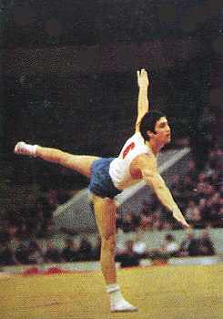

Paata Shamugiya (USSR)
1975 World Cup V Champion

Medal Total
World Championships: 1
Silver
World Cup: 1 Gold
Paata was born in 1950 and trained at Dinamo in Tbilisi.
Competition Results
1971
Jr. USSR Championships: 5th AA
Jr. USSR Spartakiade: 2nd AA, 2nd PH, 3rd R, 3rd V
1972
Jr. ROM-USSR Dual Meet: 1st Team, 2nd AA
1973
USSR Cup: 1st AA, 1st V, 1st HB, 2nd PB, 3rd FX
1974
Moscow News: 2nd AA, 1st PH, 3rd V, 3rd PB
USSR Cup: 5th AA, 1st HB, 2nd V, 4th PH
World Championships: 2nd Team, 10th AA
1975
Dynamo Championships: 2nd AA
Riga International: 6th AA, 1st V
USSR Cup: 3rd AA
USSR Spartakiade: 7th AA, 1st V, 3rd FX
World Cup: 8th AA, 1st V, 5th PB
1976
Moscow News: 2nd AA, 1st FX, 1st V, 2nd PB, 3rd HB
USSR Championships: 1st AA, 1st V, 2nd FX
USSR Cup: 6th AA, 1st V, 4th FX, 4th PB
1977
USSR Championships: 7th AA, 1st V
USSR Cup: 1st V
1979
USSR Spartakiade: 1st V
This page was created on November
05, 2006 and was last updated on December 29, 2006.
© Gymn Forum